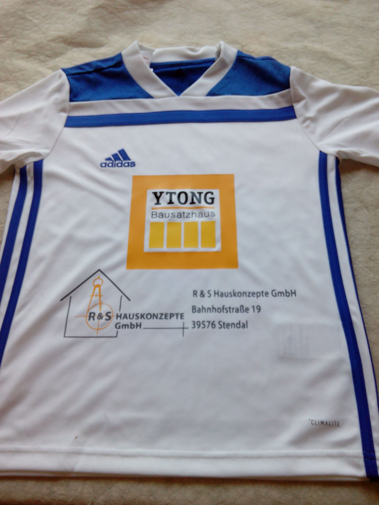
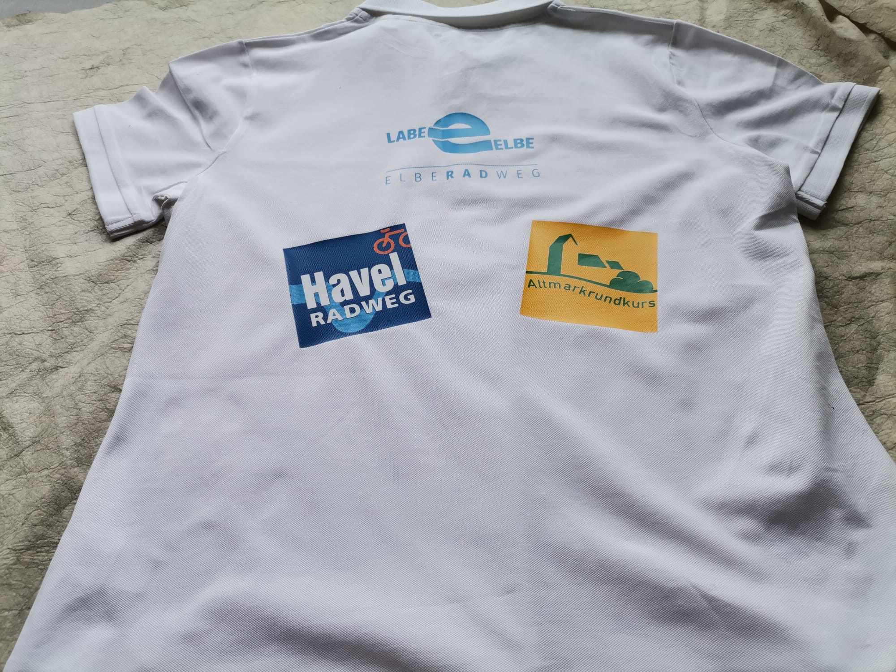
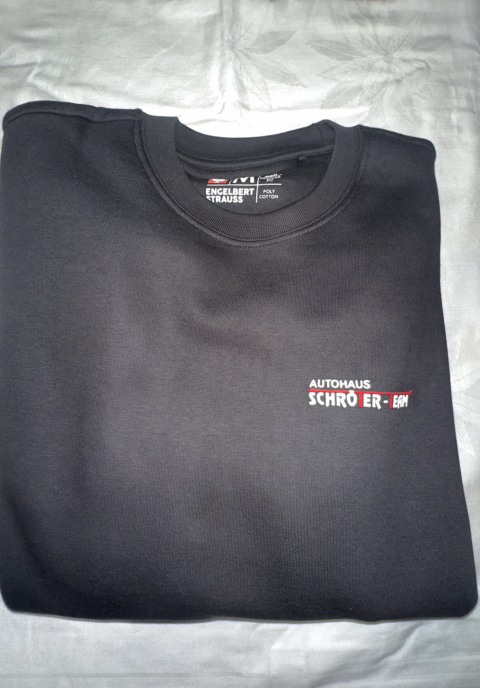
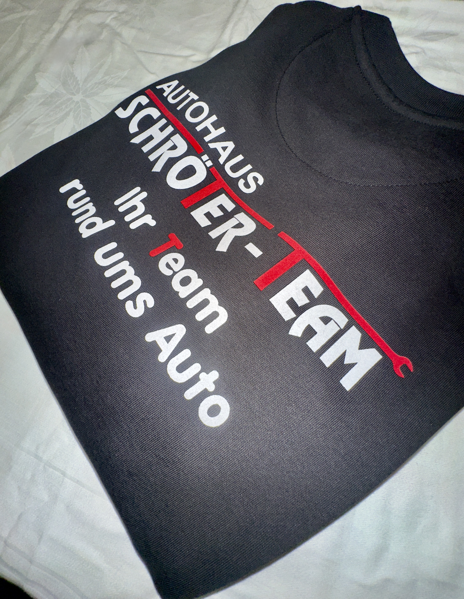
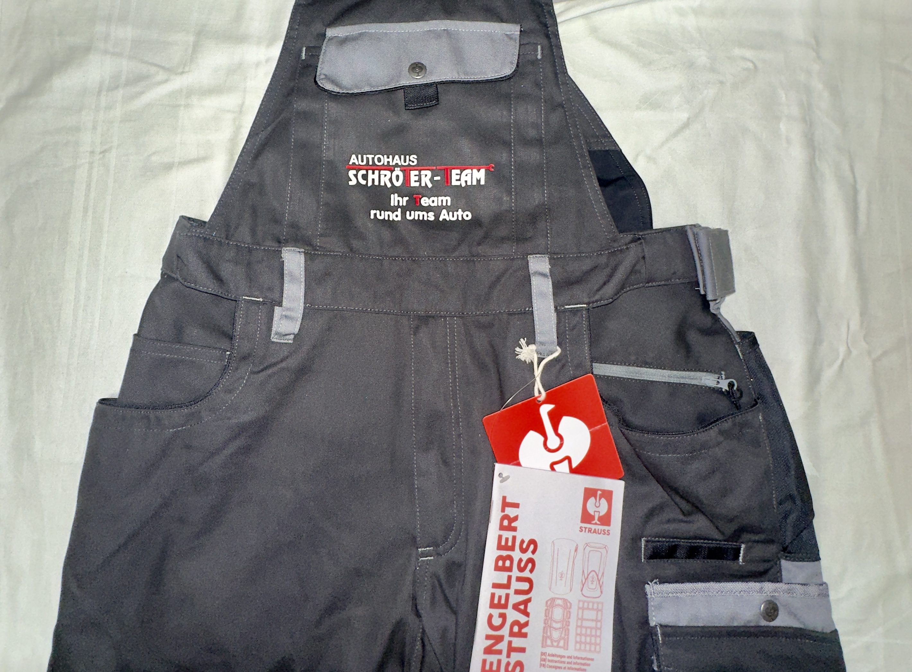
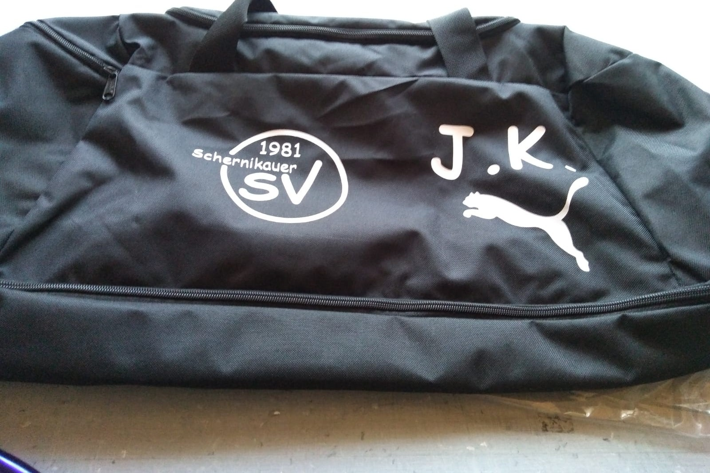
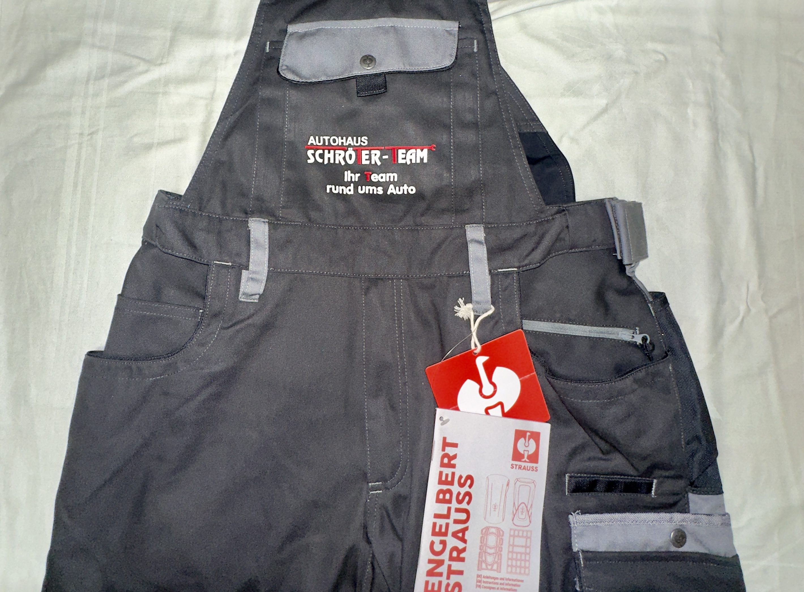
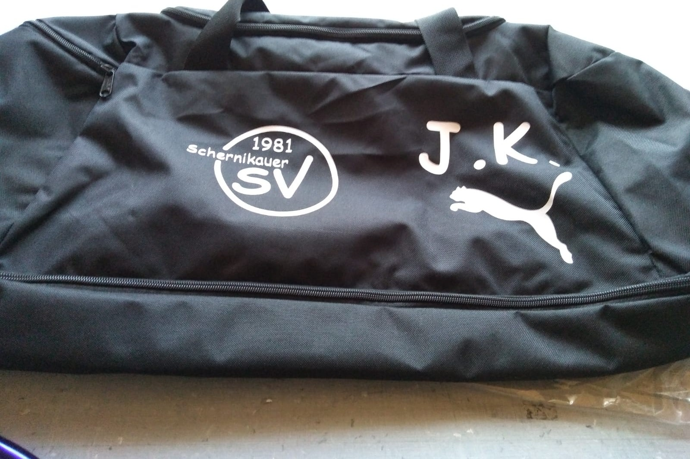
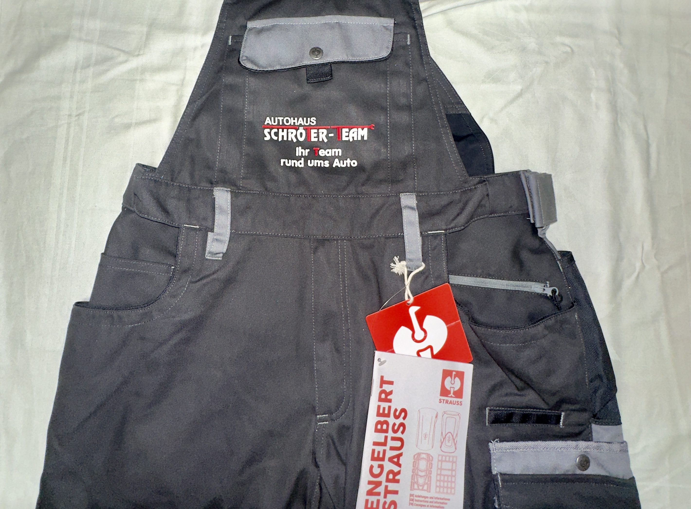
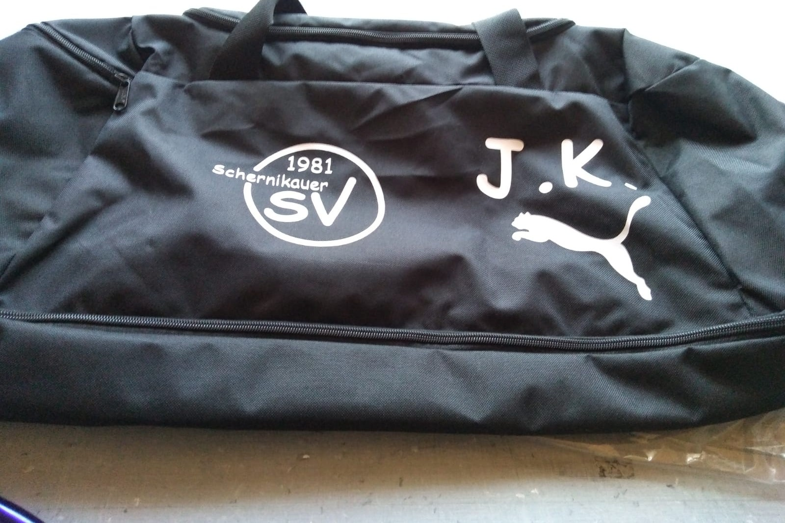

Textildruck – Flex und Flock für spürbare Auftritte
Ob Arbeitskleidung, Vereins-Shirts oder Promotion-Artikel – mit unserem Textildruck in Flex- und Flockfolie setzen wir Ihr Logo, Ihren Slogan oder Design wirkungsvoll in Szene. Farbintensiv, angenehm zu tragen und langlebig.
Unsere Möglichkeiten:
- Flexdruck – glatte, elastische Folie für klare Motive, Schriftzüge und Logos in kräftigen Farben.1
- Flockdruck – samtige Oberfläche mit edler Haptik für einen hochwertigen Look und besondere Wirkung.2
- Textilien und Accessoires – von T-Shirts über Stoffbeutel bis hin zu Caps.
- Individuelle Gestaltung – zahlreiche Farben und Kombinationen möglich.
- Klein- und Großauflagen – vom Einzelstück bis zur kompletten Serie.
- Hochwertige Verarbeitung für langlebige Ergebnisse
- Leuchtende Farben und präzise Konturen
- Vielseitig einsetzbar – für Textilien, Taschen und Arbeitskleidung
- Persönliche Beratung und professionelle Umsetzung
Mit Flex- und Flockdruck verwandeln wir Textilien in echte Hingucker – ideal für Unternehmen, Vereine, Events oder als individuelles Geschenk.




 





1 Flexdruck ist eine glatte, elastische Folie, die mit Hitze auf Textilien gepresst wird – besonders für klare Konturen und intensive Farben geeignet.
2 Flockdruck erzeugt eine samtige Oberfläche mit weicher Haptik, die Textilien einen hochwertigen Look verleiht.